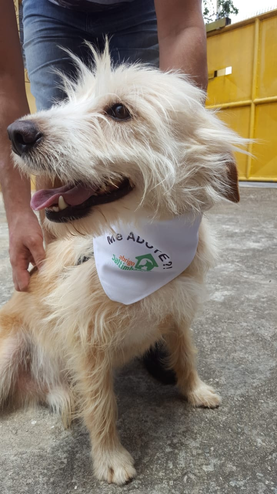

<div class="container">
  <div class="col-md-12 form-inline">
    <div class="col-md-4">
      
    </div>
    <div class="col-md-8">
      <p class="text">Todos os meses trabalhamos duro para conseguir dar aos nossos animais as melhores condições de sobrevivência e tratamento.
        Mas, a cada cãozinho ou gato abandonado que abraçamos em nosso abrigo, os custos se elevam e fica mais e mais difícil
        nos mantermos operando.</p>
        <p class="text">Não são raras as vezes que precisamos colocar dinheiro do nosso bolso, e o fazemos, apesar do grande esforço, porque
          eles contam com a gente, não possuem mais ninguém no mundo. Mas… será mesmo? Se você ainda não tem condições de
          ajudá-los, dando-lhes um novo lar e uma nova família, ainda pode encontrar formas de prestar seu apoio e demonstrar
          seu carinho e consideração por todos os desafos que esse bichinhos já enfrentaram até aqui.</p>
        <p class="text">Conheça algumas delas:</p>
        <button class="btn btn-outline-danger" [routerLink]="['/how-to-help']">COMO AJUDAR?</button>
    </div>
  </div>
</div>